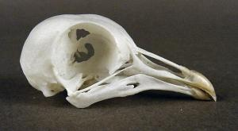
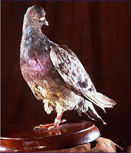
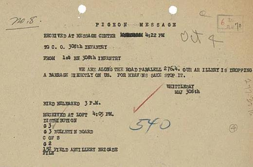
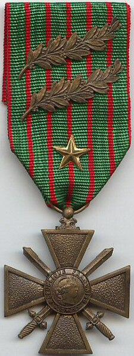
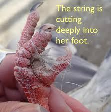

Scan for mobile!
Click to hide!
LIFE OF A PIGEON...
Click on the pigeon parts to learn about them.
Isn't Easy.
Why?
Pigeons were abandoned by humans unintentionally, being replaced as technology advances rapidly.
Having nowhere to go these pigeons are stuck living on the streets, in close proximity to humans, but keeping safe distance.
Over time, they were seen as "The Sky's Rats", their image and reputation shifting from a high valued pet to a pest.
Humans started seeing them as diseased ridden nuisance.
Discover
Click on the images to learn about pigeons
Pigeon History
Learn about the past of pigeons.
Pigeon Hatred
Learn why people hate them now.
Pigeon Breeds
Learn about the different breeds.
Pigeon Care
Take care of your pet pigeon!
Pigeon Quiz
Test your knowledge about pigeons!
Wings of a Pigeon
38-42 cm Long with a wingh4 of 50-67cm
Head of a Pigeon
Tail of a Pigeon
Helps pigeon balance, steer, brake, and attract mates.
What are Pigeons?
Domestic pigeons are a sub species of the 'Rock Pigeon'. These pigeons have been domesticated over 50,000 years ago, making them one of the oldest domesticated birds.
Pigeon history
Not much is known about their initial domestication due to their poor, fragile bones making it hard to study.
They were first domesticated in Mesopotamia, intially farmed for food and eventually used for sending letters to others and pigeon races due to their homing ability.
Picture shows "pigeon racing"
Usage In World War I
Pigeons played a vital role in both World War. Their homing ability, speed, and altitude, made them reliable messengers. A pigeon's role in the war is dangerous, often being shot down before they could reach their target as enemies knew they held important messengers.
 But one famous pigeon, Cher Ami, delivered a message that saved nearly 200 soldiers during World War I. Out of 3 pigeons that were released, only Cher Ami managed to deliver the message. This message was crucial since allied soldiers were aiming for their own soldiers without realising.
He was then awarded the Croix de guerre, a medal to recognise French and allied soldiers who cited valorous service during the war
Pigeon Timeline Summary
-
3000 BCE to 1150 CE (Domestication and food)
Early evidence in Mesopotamia and ancient Egypt.
-
Ancient Civilizations
Used for communication in Egypt, Mesopotamia, Persia, Greece, and Rome.
-
Ancient Olympics
Pigeons carried Olympic results to distant cities.
-
Middle Ages
Reintroduced to Europe by Crusaders for communication and racing.
-
1800s
Pigeon post began in France, expanding internationally.
-
19th to 20th Centuries
Used by journalists and militaries during WWI & WWII.
-
1918, Extinction
Passenger pigeon went extinct due to overhunting and deforestation.
-
1940s
Pigeon racing had a surge in popularity.
-
Post-WWII
Usage of pigeons started to decline as modern technologies advances, but some are still used for military.
The Hate
Most people are scared of pigeons as they believe they are dirty and carry diseases, this myth most likely came after world war II.
Because they live near humans and leave their droppings everywhere and travel in flocks, this causes more anger towards them. People see them as pests.
However, these pigeons rarely transmit diseases and are generally cleaner than most birds. Since they live near humans, their the perception of them being dirty is more on their environment instead of their lack of hygeine.
Issues They Face
-
String Foot
Pigeon's feet gets tangled in strings like hair, common strings, or fishing lines and more. This cuts circulation to their feet, which is why some pigeons you see in public may have missing toes or missing foot.
How to prevent:
Properly dispose of any sort of thread.
-
Human Food
Human junk food, or most human food, are generally unhealthy for most birds.
Since pigeons forage for food from us humans, they may end up suffering from malnourishment or get digestive issues.
How to prevent:
Do not over order food and throw leftovers out or drop any.
-
Lead poisoning
Pigeons may end up drinking contaminated water in the cities.
How to prevent:
Avoid keeping contaminated water uncovered, put a lid over any unclean water source.
-
Stress induced feather loss
Pigeons may go through high stress at the environmental changes or overcrowding. This can lead to aggression, faster diseases transmission, feather plucking or weak chicks.
How to prevent:
Avoid preventing pigeons from nesting or making loud noises.
These are only a few problems that pigeons, maybe even most animals we see, go through.
Breeds
Here are only some of the hundreds of pigeon breeds.
Pigeon Breed
Text
Test Your Knowledge!
Question
Answer
Pigeon Care!
Click the pigeon to earn money!
Money: $0
Hunger: 100
Cleanliness: 100
Love: 0
Boredom: 100
What do you want to feed it?
If you're on mobile, tap on the pigeon to interact with any items!